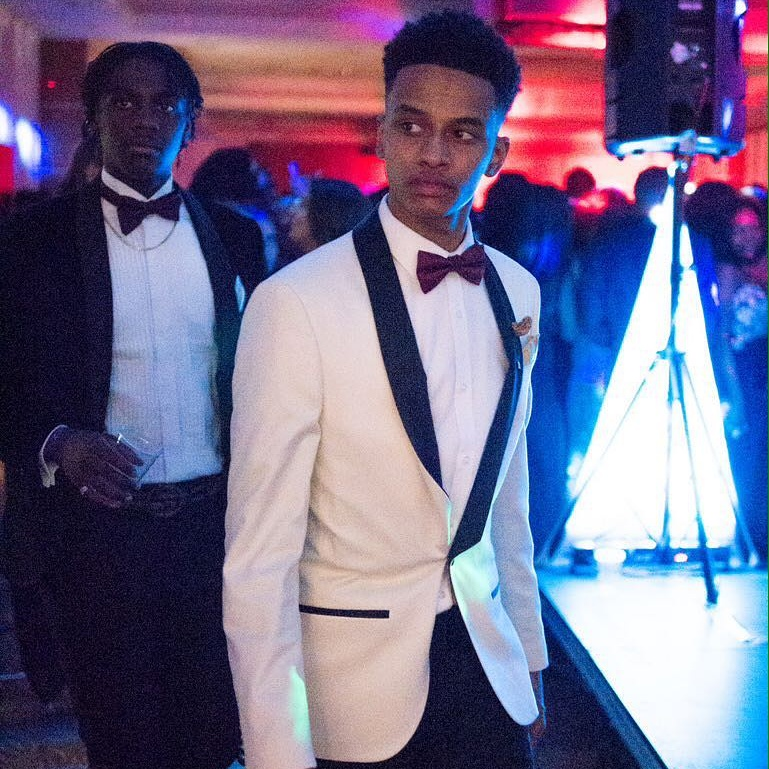

Work
I work for a small IT Solutions company in Waterloo called Technology Partnership. As I am a StepForward apprentice, I am required to take at least one day a week away from work to study an IT BTEC and complete coursework.

This is my first website
About

Hi my name is Kyle. I am an Apprentice IT engineer and musician. I began learning the piano when I was around 14 years old and very quickly fell in love with it. Through passion and perserverance, I manged to rapidly excel in my abilities. Within the first year, I began learning how to play Grade 8 pieces of music and added them to my repertoire within a few months. I work for a small IT Solutions company in Waterloo called Technology Partnership. As I am a StepForward apprentice, I am required to take at least one day a week away from work to study an IT BTEC and complete coursework.
Work

Contact